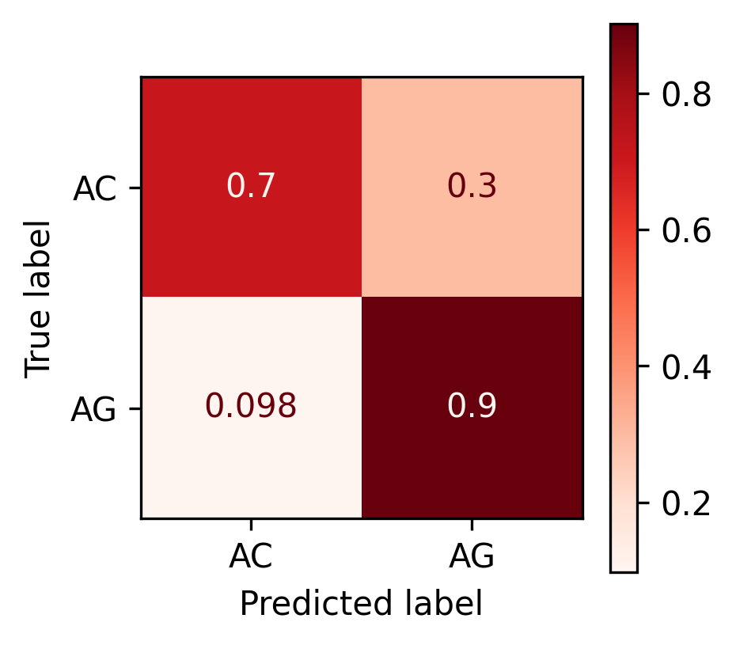
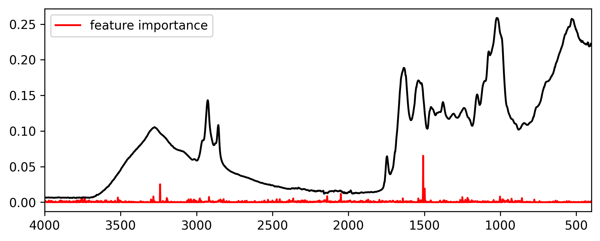

# encoding our labels. XGBoost only accepts values from 0 to n-1 classes
lb = LabelEncoder()
lb.fit(y)
y_encoded = lb.transform(y)
y_encodedarray([0, 0, 0, ..., 1, 1, 1])This is a simple pipeline to apply if you want to test XGBoost. The new version of XGboost requieres you to encode your tagets from 0 to n-1 classes.
You need to install the package xgboost using
pip install xgboostif you are using conda enviroment use this instead:
conda install -c conda-forge py-xgboostPlease, check the documentation to learn more.
We follow the similar pipeline of load data and extract our features and targets. For plotting purposes, we extract the name of the columns (wavenumbers) and we save them as integers.
df = pd.read_csv("/Users/mauropazmino/Documents/Learning/Deep_learning_tensor/data/MIRS_temperature_vs_age_20241014.dat", sep="\t")
# Extract features and labels
X = np.asarray(df.iloc[:, 15:-1])
y = np.asarray(df.iloc[:,0])
# extract the wavenumbers for plots
wavenumbers = df.iloc[:, 15:-1].columns.astype(int)To transform our labels (in this case species) into values of 0 and n-1 classes, we use Label Encoder from sklearn. This process still applies if you have multiple labels.
We import the model. You will see all the hyperparameters and their default values.
We train the model using fit function
# train
clf.fit(X_train, y_train)We calculate its accuracy on the test set
and finally a confusion matrix
fig, ax = plt.subplots(figsize=(3, 3))
ConfusionMatrixDisplay.from_predictions(lb.inverse_transform(y_test), lb.inverse_transform(y_pred), normalize='true', cmap='Reds',ax=ax)
XGBoost have a feature importance attribute that we can use to see which wavenumber has the most influence in the prediction fo species. You can obtain this information with the feature_importances_ attribute. We plot these values agaist the wavenumbers and superimpose a spectra to have a clear idea of which regions of the spectrum are important.
# feature importance
fig, ax = plt.subplots(figsize=(8, 3))
ax.plot(wavenumbers, clf.feature_importances_, color='r', label='feature importance')
ax.plot(wavenumbers, X[1], color='k')
ax.set_xlim(4000, 400)
ax.legend()